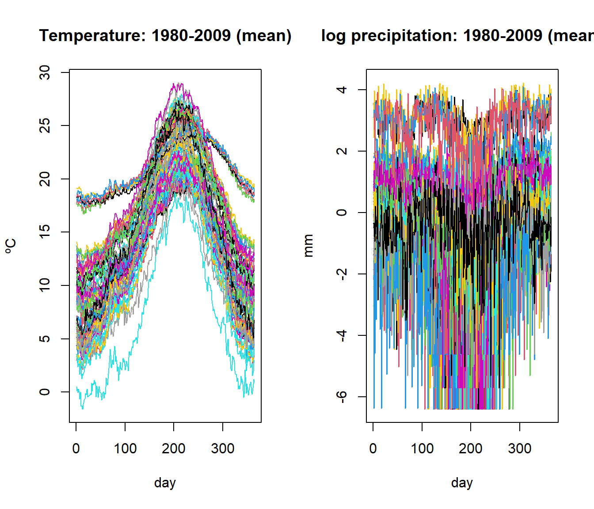
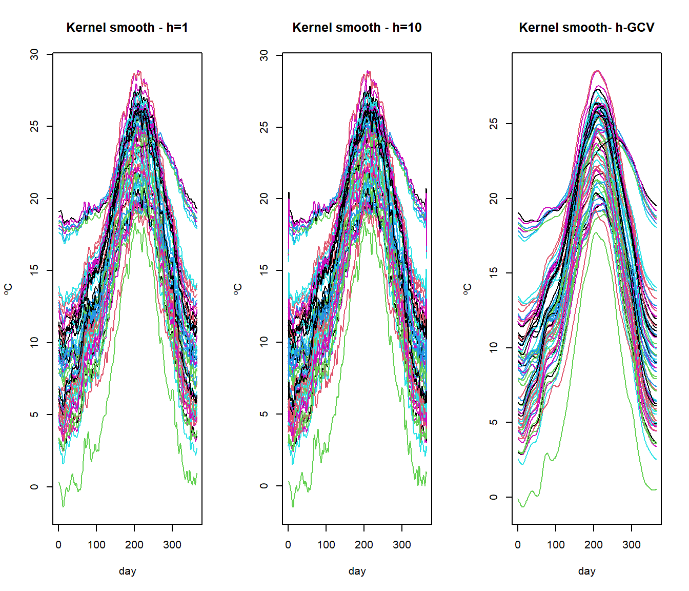
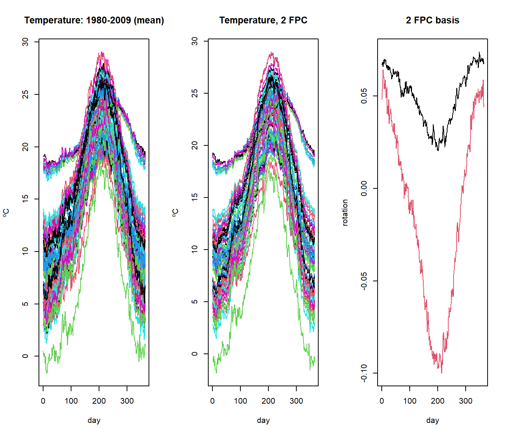

Chapter 1 Functional Data: Definition, Representation and Manipulation
1.1 Some definitions of Functional Data
Functional data analysis is a branch of statistics that analyzes data providing information about curves, surfaces or anything else varying over a continuum. The continuum is often time, but may also be spatial location, wavelength, probability, etc.
Functional data analysis is a branch of statistics concerned with analysing data in the form of functions.
Definition 1: A random variable \(\mathcal{X}\) is called a functional variable if it takes values in a functional space \(\mathcal{E}\) –complete normed (or seminormed) space–, (Frédéric Ferraty and Vieu 2006)
Definition 2: A functional dataset \(\{\mathcal{X}_1,\ldots,\mathcal{X}_n\}\) is the observation of n functional variables \(\mathcal{X}_1,\ldots,\mathcal{X}_n\) identically distributed as \(\mathcal{X}\), (Frédéric Ferraty and Vieu 2006).
A research stream focuses on the computational treatment that is used to working with functional data as an extension of multivariate data. Thus, the following definition of functional data proposed by (Müller et al. 2008) is also common in practice.
- Definition 3. Functional data is multivariate data with an ordering on the dimensions, so that \(a=t_1<t_2,\ldots,t_{m-1}< b=t_m\).
1.2 In fda.usc: ``The data are curves’’
\(X_i(t)\) represents the mean temperature (averaged over 1980-2009 years) at the ith weather station in Spain, and at time time \(t\) during the year.
Temperature curves (right) located in Spanish airports (left),

But what code has been used to obtain the graph?
data(aemet)
par(mfrow=c(1,2))
CanaryIslands <- ifelse(aemet$df$latitude < 31, 2, 4)
plot(aemet$df[,c("longitude","latitude")], col = CanaryIslands, lwd=2)
plot(temp, col = CanaryIslands, lwd=2)1.2.1 Definition of –fdata– class in R
Definition of fdata class object: An object called fdata as a list of the following components:
data: typically a matrix of (n x m) dimension which contains a set of n curves discretized in m points orargvals.argvals: locations of the discretization points, by default: \({{t}_1=1,\ldots,{t}_m=m}\}\).rangeval: rangeval of discretization points.names: (optional) list with three components:main, an overall title,xlab, a title for the x axis andylab, a title for the y axis.
lapply(aemet,class)
names(aemet$df)
lapply(aemet$temp,class)
temp <- aemet$temp
names(temp)
dim(temp)
length(argvals(temp))
rangeval(temp)
temp$names1.2.2 Some utilities of fda.usc package
- Basic operations for fdata class objects:
- Group Math:
abs,sqrt,floor,ceiling,semimetric.basis(),trunc,round,signif,exp,log,cos,sin,tan`. - Other operations:
[],is.fdata(),c(),dim(),ncol(),nrow().
is.fdata(aemet$temp)
is.fdata(aemet$df)
dim(aemet$df)
dim(aemet$temp)- Convert the class
The class fdata only uses the evaluations at the discretization points.
The
fdata2fd()converts fdata object to fd object (using the basis representation).Inversely, the
fdata()converts object of class: fd, fds, fts, sfts, vector, matrix, data.frame to an object of class fdata.
temp.fd=fdata2fd(temp,type.basis="fourier",nbasis=15)
temp.fdata=fdata(temp.fd) #back to fdata
class(temp.fd)## [1] "fd"class(temp.fdata)## [1] "fdata"split.fdata()andunlist(): A wrapper for the split and unlist function for fdata object
# Canary Islands in red vs Iberian Peninsula in blue
l1 <- fda.usc:::split.fdata(temp,CanaryIslands)
par(mfrow=c(1,2))
plot(l1[[1]],col=2,ylim=c(0,30))
plot(l1[[2]],col=4,ylim=c(0,30))
dim(l1[[1]]);dim(l1[[2]])## [1] 9 365## [1] 64 365- Group Ops: + -, *, /, ^, %%, %/%, &, |, !, ==, !=, <, <=, >=, >.
l1[[1]]==l1[[2]]## [1] FALSEorder.fdata()A wrapper for the order function. The funcional data is ordered w.r.t the sample order of the values of vector.
temp2 <- order.fdata(order(CanaryIslands),temp)- Generate random process of fdata class.
rproc2fdata() function generates Functional data from: Ornstein Uhlenbeck process, Brownian process, Gaussian process or Exponential variogram process.
par(mfrow=c(1,2))
lent <- 30
tt <- seq(0,1,len=lent)
xgen1 <- rproc2fdata(200,t=tt,sigma="OU",par.list=list("scale"=1))
plot(xgen1)
mu <- fdata(sin(2*pi*tt),tt)
xgen2 <- rproc2fdata(200,mu=mu,sigma="OU",par.list=list("scale"=1))
plot(xgen2)
1.2.3 Definition of –ldata– class in R
ldata is a list with two type of objects:
dfis a data frame with the multivariate data with n rows....objects of classfdatawith n rows.
ldat <- ldata(df=aemet$df,temp=aemet$temp, logprec=aemet$logprec )
plot(ldat)
1.3 Resume by smoothing
If we supposed that our functional data \(Y(t)\) is observed through the model \(Y(t_i)=X(t_i)+\varepsilon(t_i)\) where the residuals \(\varepsilon(t)\) are independent with \(X(t)\).
We can to get back the original signal \(X(t)\) using a linear smoother: \[\hat{X}(t_i)=\sum_{i=1}^{n} s_{i}(t_j)Y(t_i) \Rightarrow \mathbf{\hat{X}}=\mathbf{S}\mathbf{Y} \] where \(s_{i}(t_j)\) is the weight that the point \(t_j\) gives to the point \(t_i\).
We use two methods to estimate the smoothing matrix \(S\).
- Finite representation in a fixed basis (Ramsay and Silverman 2005a):
Let \(X(t)\in \mathcal{L}_2\), \[ X(t)= \sum_{k\in\mathbb{N}}{c_k\phi_k(t)}\approx\sum_{k=1}^K c_k\phi_k(t)=c^{\top}\Phi\]
The smoothing matrix is given by: \(\mathbf{S}=\Phi(\Phi^{\top}W\Phi+\lambda R)^{-1}\Phi^{\top}W\) where \(\lambda\) is the penalty parameter.
Type of basis:
Fourier: Design to represent periodic functions. Orthonormal
BSplines: Set of polynomials (of order m) defined in subintervals constructed in such a way that in the border of the subintervals the polynomials coincide (up to \(m - 2\) derivative). Banded
Wavelets: Powerful especially when the grid is a power of 2. Orthonormal
Polynomials: Adjust a polynomial to the whole curve.
Example: raw (left) and smoothed temperature curves with 111 (center) and 11 (right) elements of a B-spline base:
bsp11 <- create.bspline.basis(temp$rangeval,nbasis=11)
bsp111 <- create.bspline.basis(temp$rangeval,nbasis=111)
S.bsp11 <- S.basis(temp$argvals, bsp11)
S.bsp111 <- S.basis(temp$argvals, bsp111)
temp.bsp11 <- temp.bsp111<-temp
temp.bsp11$data <- temp$data%*%S.bsp11
temp.bsp111$data <- temp$data%*%S.bsp111
par(mfrow=c(1,3))
plot(temp)
plot(temp.bsp111, main="111 Bspline basis elements")
plot(temp.bsp11, main="11 Bspline basis elements")
# Another way
out1<-optim.basis(temp, type.CV=CV.S)
names(out1)## [1] "gcv" "numbasis" "lambda" "fdataobj" "fdata.est"
## [6] "gcv.opt" "numbasis.opt" "lambda.opt" "S.opt" "base.opt"out1$numbasis.opt## [1] 76- Kernel Smoothing (Frédéric Ferraty and Vieu 2006)
The problem is to estimate the smoothing parameter or bandwidth \(\nu=h\) that better represents the functional data using kernel smoothing. Now,the nonparametric smoothing of functional data is given by the smoothing matrix \(S\): \[s_{ij}=\frac{1}{h}K\left(\frac{t_i-t_j}{h}\right)\]
\[S(h)=(s_j(t_i))=\frac{K\left(\frac{t_i-t_j}{h}\right)}{\sum_{k=1}^{\top}K\left(\frac{t_k-t_j}{h}\right)}\] where \(h\) is the bandwidth and \(K()\) the Kernel function.
Different types of kernels \(K()\) are defined in the package, see Kernel function.
Example: three examples of non-parametric smoothing with different values of the bandwidth parameter (\(h = 1\), left; \(h = 10\), center and \(h\) selected by the GCV criteria, right).
S <- S.NW(temp$argvals,h=1)
temp <- aemet$temp
temp.hat <- temp
temp.hat$data <- temp$data%*%S
args(optim.np)## function (fdataobj, h = NULL, W = NULL, Ker = Ker.norm, type.CV = GCV.S,
## type.S = S.NW, par.CV = list(trim = 0, draw = FALSE), par.S = list(),
## correl = TRUE, verbose = FALSE, ...)
## NULL# Another way
temp.est <- optim.np(temp,h=1)$fdata.est
par(mfrow=c(1,3))
plot(temp.est,main="Kernel smooth - h=1")
temp.est == temp.hat## [1] FALSEplot(temp.hat, main="Kernel smooth - h=10")
plot(optim.np(temp)$fdata.est, main="Kernel smooth- h-GCV")
- Finite representation in a Data-driven basis (Cardot, Ferraty, and Sarda 1999)
- Functional Principal Components (FPC) Functional Principal Components Analysis (FPCA) and the Functional PLS (FPLS) allow display the functional in a few components.
The functional data can be rewritten as a decomposition in an orthonormal PC basis: maximizing the variance of \(X(t)\):
\[ \hat{X}_{i}(t)=\sum_{i=1}^{K}f_{ik}\xi_{k}(t) \]
where \(f_{i,k}\) is the score of the principal component PC, \(\xi_k\).
Example: Functional principal component analysis (FPCA)
y <- rowSums(aemet$logprec$data)
par(mfrow=c(1,3))
plot(aemet$temp)
plot((pc <- create.pc.basis(aemet$temp,l=1:2))$fdata.est,main="Temperature, 2 FPC")
pc2 <- fdata2pc(aemet$temp)
plot(pc2$rotation, main="2 FPC basis", xlab="day")
summary(pc2)## [1] TRUE
##
## - SUMMARY: fdata2pc object -
##
## -With 2 components are explained 98.78 %
## of the variability of explicative variables.
##
## -Variability for each component (%):
## [1] 85.57 13.21
- Functional Partial Least Squares (FPLS) (Krämer and Sugiyama 2011) The PLS components seek to maximize the covariance of \(X(t)\) and \(y\).
args(create.pls.basis)
args(fdata2pls)An integrated version of these functions is coming.
Example: Exploratory analysis for spectrometric curves
Tecator dataset: 215 spectrometric curves of meat samples also with Fat, Water and Protein contents obtained by analytic procedures.
Tecator Goal: Explain the fat content through spectrometric curves.
data(tecator)
names(tecator)## [1] "absorp.fdata" "y"names(tecator$y)## [1] "Fat" "Water" "Protein"As shown in tecator Figure, the plot of \(X(t)\) against \(t\) is not necessarily the most informative and other semi-metric can allow to extract much information from functional variables.
The information about fat seems to be contained in the shape of the curves, so, the semimetric of derivatives could be preferred to \(\mathcal{L}_2\). It is difficult to find the best plot given a particular functional dataset because the shape of graphics depends strongly on the proximity measure.

1.3.1 Derivatives
To compute derivatives there are several options (see fdata.deriv function):
- Raw Diferentiation: Only interesting when the number of discretization points are dense.
- Basis representation: Dierentiate a finite representation in a basis.
- Spline Interpolation: Perform a spline interpolation of given data points and use this interpolation for computing derivatives.
- Nonparametric Estimation: Use a Local Polynomial Estimator of the functional data.
Examle:

1.3.2 Computing distances, norms and inner products
Utilities for computing distances, norm and inner products are included in the package. Below are described those but of course, many others can be built with the only restriction that the first two arguments correspond to class –fdata–. In addition, the procedures of the package fda.usc that contains the argument –metric– allow the use of metric or semi-metric functions as shown in the following sections.
Distance between functional elements,
metric.lp: \(d(X(t),Y(t))=\left\|X(t)-Y(t)\right\|\) with a norm \(\left\| \cdot \right\|\)Norm
norm.fdata: \(\left\|X(t)\right\|=\sqrt{\left\langle X(t),X(t)\right\rangle}\)Inner product
inprod.fdata: \(\left\langle x,y \right\rangle=(1/4)(\left\|x+y\right\|^2-\left\|x-y\right\|^2)\).
fda.usc package collects several metric and semi-metric functions which allow to extract as much information possible from the functional variable.
Option 1: If the data is in a Hilbert space, represent your data in a basis, and compute all the things accordingly. From a practical point of way, the representation of a functional datum must be approximated by a finite number of terms.
semimetric.basis()
Option 2: Approximates all quantities using numerical approximations (Valid for Hilbert and non-Hilbert spaces). This usually involves numerical approximations of integrals, derivatives and so on. A collection of semi-metrics proposed by (Frédéric Ferraty and Vieu 2006) are also included in the package.
semimetric.pca(), based on the Principal Components.semimetric.mplsr(), based on the Partial Least Squares.
semimetric.deriv(), based on B-spline representation.semimetric.hshift(), measure the horizontal shift effect.semimetric.fourier(), based on ther Fourier representation
Example of computing norms
Consider \(X(t) = t^2; t\in[0, 1]\). In this case \(||X_1|| =\sqrt{1/5}=0.4472136\) and \(||X_2|| =1/3\)
t = seq(0, 1, len = 101)
x2 = t^2
x2 = fdata(x2, t)
(c(norm.fdata(x2), norm.fdata(x2, lp = 1))) # L2, L1 norm## [1] 0.4472509 0.3333500f1 = fdata(rep(1, length(t)), t)
f2 = fdata(sin(2 * pi * t), t) * sqrt(2)
f3 = fdata(cos(2 * pi * t), t) * sqrt(2)
f4 = fdata(sin(4 * pi * t), t) * sqrt(2)
f5 = fdata(cos(4 * pi * t), t) * sqrt(2)
fou5 = c(f1, f2, f3, f4, f5) # Fourier basis is Orthonormal
round(inprod.fdata(fou5), 5)## [,1] [,2] [,3] [,4] [,5]
## [1,] 1 0 0 0 0
## [2,] 0 1 0 0 0
## [3,] 0 0 1 0 0
## [4,] 0 0 0 1 0
## [5,] 0 0 0 0 1Example of computing distances
set.seed(1:4)
p<-1001
r<-rnorm(p,sd=.1)
x<-seq(0,2*pi,length=p)
fx<-fdata((sin(x)+r)/sqrt(pi),x)
fx0<-fdata(r,x)
plot(c(fx,fx0))
metric.lp(fx,fx0)[1,1]## [1] 1.003144semimetric.basis(fx,fx0,nbasis1=5,nbasis2=5)[1,1]## [1] 0.9927386semimetric.basis(fx,fx0,nbasis1=11,nbasis2=111)[1,1]## [1] 0.9992571semimetric.fourier(fx,fx0,nbasis=5)[1,1]## [1] 0.9972634semimetric.fourier(fx,fx0,nbasis=11)[1,1]## [1] 0.9992104semimetric.deriv(fx,fx0,nderiv=0,nknot=5)[1,1]## [1] 0.9934345semimetric.deriv(fx,fx0,nderiv=0,nknot=11)[1,1]## [1] 0.9984524integrate(function(x){(sin(x)/sqrt(pi))^2},0,2*pi)## 1 with absolute error < 7.3e-10Example of semi-metric as classification rule
data(tecator)
set.seed(4:1)
#ind<-sample(215,30)
#xx<-tecator$absorp[ind]
yy<-ifelse(tecator$y$Fat<20,0,1)
ind<-c(sample(which(yy==0),10),sample(which(yy==1),10))
xx<-fdata.deriv(tecator$absorp[ind])
yy<-yy[ind]par(mfrow=c(1,1))
d1<-as.dist(metric.lp(xx),T,T)
c1<-hclust(d1)
c1$labels=yy
plot(c1,main="Raw data -- metric.lp",xlab="Class of eah leaf")
Try with the derivative of the curves:

Extension: Combining the information of two components using a \(p\)-dimensional metric such as, for example, the Euclidean:
\[m\left(\left(x_0^1,\ldots,x_0^p\right),\left(x_i^1,\ldots,x_i^p\right)\right):=\sqrt{m_1\left(x_0^1,x_i^1\right)^2+\cdots+m_p\left(x_0^p,x_i^p\right)^2}\]
where \(m_{i}\) denotes the metric in the \(i\)-component of the product space, see fda.usc:::metric.ldata code.
It is important here to ensure that the different metrics of the spaces have similar scales to avoid one single component dominating the overall distance.
range(d1)## [1] 0.005531143 0.091797359range(d2)## [1] 0.0003143458 0.0105466510NOTE: Dependent data in tecator dataset?
ar(tecator$y$Fat)##
## Call:
## ar(x = tecator$y$Fat)
##
## Coefficients:
## 1 2
## 0.6552 0.1161
##
## Order selected 2 sigma^2 estimated as 72.82plot(tecator$y,col=1:3)
par(mfrow=c(1,1))
ts.plot(tecator$y$Fat)
#barplot(t(tecator$y))1.4 Correlation Distances
The correlation Distances characterizes independence between vectors of arbitrary finite dimensions. Recently, in (Székely and Rizzo 2013), a bias-corrected version is considered and a test of independence developed.
data(tecator)
xx<-tecator$absorp
xx.d2<-fdata.deriv(xx,nderiv=2)
dcor.xy(xx,xx.d2)##
## dcor t-test of independence
##
## data: D1 and D2
## T = 35.933, df = 22789, p-value < 2.2e-16
## sample estimates:
## Bias corrected dcor
## 0.2315581d1<-metric.lp(xx)
d2<-metric.lp(xx.d2)
bcdcor.dist(d1,d2)## [1] 0.2315581Fat <-tecator$y[,"Fat",drop=FALSE]
d3<-metric.dist(Fat)
bcdcor.dist(d1,d3)## [1] 0.1963254bcdcor.dist(d2,d3)## [1] 0.9147076# Functional / Factor
Fat.cut<-as.matrix(cut(Fat[,1],labels=1:4,breaks=4))
dcor.xy(Fat.cut,xx.d2)##
## dcor t-test of independence
##
## data: D1 and D2
## T = 252.57, df = 22789, p-value < 2.2e-16
## sample estimates:
## Bias corrected dcor
## 0.85836611.4.1 Depth for functional data
Depth (in univariate or multivariate context) is a statistical tool that provides a center-outward ordering of data points. This ordering can be employed to define location measures (and by oposition outliers). Also, some measures can be defined as maximizers of a particular depth.
- Mahalanobis Depth (Mean)
mdepth.MhD - Halfspace Depth, also known as Tukey Depth (Median)
mdepth.HS - Convex Hull Peeling Depth (Mode)
- Oja Depth
- Simplicial Depth
mdepth.SD - Likelihood Depth (Mode)
mdepth.LD
y12<-tecator$y[,1:2]
dep<-mdepth.LD(x=y12,scale=T)$dep
plot(y12,col=grey(1-dep))
points(y12[which.max(dep),],col=4,lwd=3)
Many of the preceding depth functions defined in a multivariate contex cannot be applied to functional data. In any case, given a depth for functional data.
The deepest point is a location measure and based on the depth function can have a dierent interpretation: Mean, Median, Mode …
Computing the depths of the whole sample and ordering them (in decreasing order) gives a rank from the most central point (\(x_{[1]}\)) to the most outlying one (\(x_{[n]}\)). So, those points with larger rank are the candidates to be outliers w.r.t. the data cloud (in the sense of the depth function).
Summarizing the \((1-\alpha)\) deepest points could lead also to a robust location measure.
Fraiman-Muniz Depth (Fraiman and Muniz 2001)
depth.FMModal Depth (Antonio Cuevas, Febrero, and Fraiman 2007)
depth.modeRandom Projection Depth (Antonio Cuevas, Febrero, and Fraiman 2007)
depth.RPRandom Tukey Depth (Juan Cuesta-Albertos and Nieto-Reyes 2008)
depth.RT
Band Depth (López-Pintado and Romo 2009)
depth.MBD(private function)
x<-tecator$absorp
depth.mode(x,draw=TRUE)
1.4.2 Depth (and distances) for multivariate functional data (J. A. Cuesta-Albertos, Febrero-Bande, and Oviedo de la Fuente 2017)
Modify the procedure to incorporate the extended information.
- Fraiman–Muniz: Compute a multivariate depth marginally.
depth.FMp - Modal depth: Use a new distance between data (for derivatives, for example, the Sobolev metric).
depth.FMp - Random Projection: Consider a multivariate depth to be applied to the dierent projections (also the random projection method could be applied twice).
depth.RPp
x.d1<-fdata.deriv(x)
depth.modep(list(x=x,x.d1=x.d1),draw=T)
Example poblenou dataset
Hourly levels of nitrogen oxides in Poblenou (Barcelona). This dataset has 127 daily records (2005/01/06-2005/06/26).
Objective: Explain the diferences in NOx levels as a function of day.
data(poblenou)
dayw = ifelse(poblenou$df$day.week == 7 | poblenou$df$day.festive ==1, 3, ifelse(poblenou$df$day.week == 6, 2, 1))
plot(poblenou$nox,col=dayw)
The \(\mathcal{L}_2\) space (distance is area between curves) seems appropriate although other possibilities could be take into account (\(\mathcal{L}_1\), for example).
fmd = depth.FM(poblenou$nox,draw=T)md = depth.mode(poblenou$nox)
rpd = depth.RP(poblenou$nox, nproj = 50)
rtd = depth.RT(poblenou$nox)
print(cur <- c(fmd$lmed, md$lmed, rpd$lmed, rtd$lmed))## 2005-05-06 2005-05-06 2005-05-06 2005-03-04
## 63 63 63 10plot(poblenou$nox,col="grey")
lines(poblenou$nox[cur], lwd = 2, lty = 1:4, col = 1:4)
legend("topleft", c("FMD", "MD", "RPD", "RTD"), lwd = 2, lty = 1:4,col = 1:4)
1.4.3 Outliers detection
There is no general accepted definition of outliers in Functional data so, we define outlier as a datum generated from a dierent process than the rest of the sample with the following characteristics Its number in the sample is unknown but probably low.
An outlier will have low depth and it will be an outlier in the sense of the depth used.
md1 = depth.mode(lab <- poblenou$nox[dayw == 1]) #Labour days
md2 = depth.mode(sat <- poblenou$nox[dayw == 2]) #Saturdays
md3 = depth.mode(sun <- poblenou$nox[dayw == 3]) #Sundays/Festive
rbind(poblenou$df[dayw == 1, ][which.min(md1$dep), ], poblenou$df[dayw ==
2, ][which.min(md2$dep), ], poblenou$df[dayw == 3, ][which.min(md3$dep),])## date day.week day.festive
## 22 2005-03-18 5 0
## 57 2005-04-30 6 0
## 58 2005-05-01 7 0plot(poblenou$nox,col="grey")
lines(poblenou$nox[c(22,57,58),], lwd = 2, lty = 2:4, col = 2:4)
# Method for detecting outliers, see Febrero-Bande, 2008
#out1<-outliers.depth.trim(poblenou$nox[dayw == 1],nb=100)$outliersTwo procedures for detecting outliers are implemented in the package. (Febrero-Bande, Galeano, and González-Manteiga 2008)
Detecting outliers based on trimming:
outliers.depth.trim()Detecting outliers based on weighting:
outliers.depth.pond()
# Method for detecting outliers, see Febrero-Bande, 2008
#out1<-outliers.depth.trim(poblenou$nox[dayw == 1],nb=100)$outliers
#out2<-outliers.depth.pond(poblenou$nox[dayw == 1],nb=100)$outliers